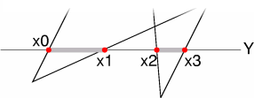
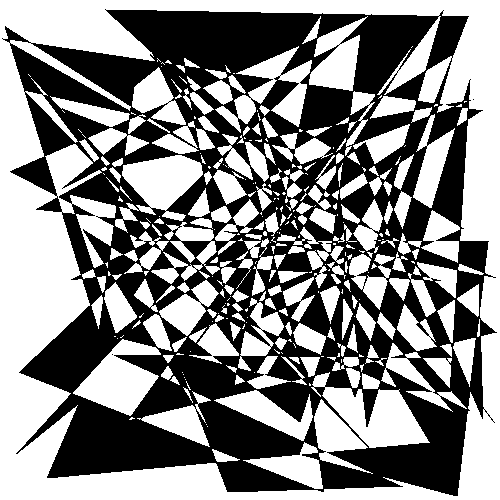
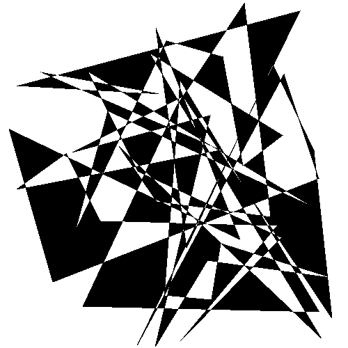
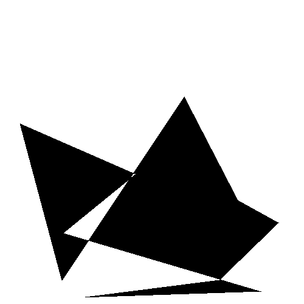
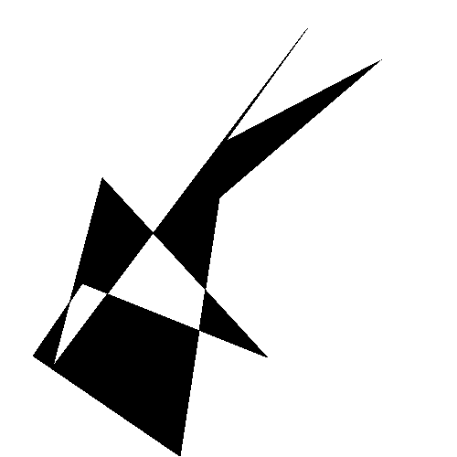
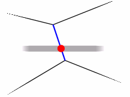
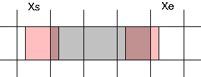
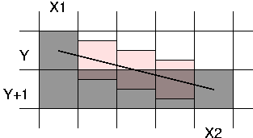

| Autor: | Wojciech Muła |
|---|---|
| Dodany: | 17.07.2002 |
| Aktualizacja: | 18.07.2005 |
W artykule przedstawię algorytm wypełniania dowolnych wielokątów, także samoprzecinających się. Z racji swojej ogólności algorytm nie jest zbyt efektywny.
Ekran jest przeglądany wierszami od góry do dołu (rosnący Y), odcinki w bieżącej linii które należy wypełnić, są wyznaczane przez współrzędne przecięć linii poziomej z krawędziami wielokąta.
O tym które odcinki będą wypełniane decyduje reguła parzystości, tak jak to przedstawiono na tysunku. W tym celu wystarczy posortować przecięcia względem współrzędnej X, a następnie wypełniać odcinki pomiędzy kolejnymi parami punktów. Proszę zauważyć, że w prawidłowo zdefiniowanym wielokącie liczba przecięć jest zawsze parzysta.
Obliczanie przecięć nie jest konieczne. Jeśli dla każdej krawędzi zostanie obliczony przyrost dX/dY, to mając współrzędna X przecięcia dla linii Y − 1, wyznaczanie X w linii Y sprowadzi się do dodania tego przyrostu: XY = XY − 1 + dX/dY. Potrzebna jest jeszcze początkowa wartość X — jest to współrzędna X wierzchołka o najmniejszej współrzędnej Y, jest to bowiem punkt z którym po raz pierwszy przecina się scanline.
Przyrost dla dY = 0 jest nieokreślony, dlatego też krawędzie poziome są ignorowane.
Pewnym problemem może być dublowanie wyników i co za tym idzie błędy w wyświetlaniu na wspólnych wierzchołkach. Można temu zaradzić, przyjmując założenie, że końcowy punkt o maksymalnej współrzędnej Y nie należy już do krawędzi.
Warto zauważyć, że w ogólnym przypadku nie wszystkie krawędzie wielokąta mają przecięcie z linią Y, dlatego też tworzy się listę tzw. aktywnych krawędzi, czyli tych krawędzi dla których wykonywane są obliczenia. Krawędź jest dodawana gdy Y = min(Yedge), usuwana gdy Y = max(Yedge). W przypadku, gdy liczba krawędzi jest względnie mała nie opłaca się budować dodatkowej listy — wystarczy przeglądać istniejącą listę krawędzi.
Wielokąt jest opisywany przez listę wierzchołków (większość API graficznych stosuję tę konwencję). Do wypełnienia potrzebne są jednak krawędzie, struktura danych przechowująca wszystkie niezbędne informacje może wyglądać tak:
typedef struct {
int minY; // minimalna i
iny maxY; // maksymalna wartość wsp. Y
float x; // początkowa wartość wsp. X
float dXdY; // przyrost
} EDGE;
// (x0,y0), (x1, y1) - wsp. końców krawędzi
int setup_edge(int x0, int y0, int x1, int y1, EDGE* e) {
int t;
if (y1 == y0) // poziome krawędzie są ignorowane
return 0;
if (y0 > y1) { // posortuje względem y-ka
t = x0; x0 = x1; x1 = t;
t = y0; y0 = y1; y1 = t;
}
float dX = x1 - x0;
float dY = y1 - y0;
e->dXdY = dX/dY;
e->Ymin = y0;
e->Ymax = y1;
e->x = x0;
return 1;
}
Pozwolę sobie na zaprezentowanie pseudokodu, przede wszystkim z tego względu iż wykonywane są operacje na listach, a te jak wiadomo można bardzo różnie implementować (albo wcale, o czym pisałem nieco wyżej). Będą używane nazwy pól ze struktury EDGE.
1. utwórz listę krawędzi, ignoruj wszystkie krawędzie poziome
2. wyznacz minimalną i maksymalną wartość współrzędnej Y
(nie ma potrzeby przeglądać linii leżących poza wielokątem)
3. utwórz pustą listę aktywnych krawędzi
4. for y:=minimum to maksimum do
begin
for wszystkie element z listy krawędzi do
if ``minY`` i-tej krawędzi jest równe y then
przenieś element do listy aktywnych krawędzi
for wszystkie element z listy aktywnych krawędzi do
if ``maxY`` i-tej krawędzi jest równe y then
usuń element z listy
utwórz listę przecięć poprzez skopiowanie
pól ``x`` z elementów listy aktywnych krawędzi
posortuj tę listę
for i:=0 to rozmiar listy przecięć/2 do
wypełnij poziomy odcinek pomiędzy wsp. z listy przecięć
o indeksach ``2i`` i ``2i+1``
for wszystkie elementy z listy aktywnych krawędzi do
x[i] := x[i] + dXdY[i]
end
Poniżej program w Pythonie, który zapisuje wynik do pliku PNM.
# file: fillpolygon.py
# -*- coding: iso-8859-2 -*-
def fillpolygon(image, points):
"""
points - lista par (x,y)
"""
X = [p[0] for p in points]
Y = [p[1] for p in points]
# stwórz listę krawędzi
class Edge: pass
edges = []
n = len(points)
for i in xrange(n):
j = (i+1) % n
x1,y1 = points[i]
x2,y2 = points[j]
if y2-y1 == 0: # poziome krawędzie są ignorowane
continue
if y1 > y2:
x1,x2 = x2,x1
y1,y2 = y2,y1
e = Edge()
e.x = float(x1)
e.minY = y1
e.maxY = y2
e.dXdY = float(x2-x1)/(y2-y1)
edges.append(e)
# wypełnianie
active_edges = []
for y in xrange( min(Y), max(Y)+1 ):
# dodanie tych krawędzi, dla których edge.minY == y
tmp = [edge for edge in edges if edge.minY == y]
active_edges.extend(tmp)
edges = [edge for edge in edges if edge.minY > y]
# usunięcie tych krawędzi z listy aktywnych, dla których
# edge.maxY == y
active_edges = [edge for edge in active_edges if edge.maxY > y]
# stworzenie listy posortowanych współrzędnych x
x = [edge.x for edge in active_edges]
x.sort()
# wypełnienie
for i in xrange(0, len(x), 2):
fillsegment(image, int(x[i]),int(x[i+1]),y)
# uaktualnienie wsp. X aktywnych krawędzi
for i in xrange(len(active_edges)):
active_edges[i].x += active_edges[i].dXdY
# funkcje pomocnicze
def make_image(w,h):
"funkcja tworzy białą pixmapę"
line = [(255,255,255)]*w
image = [line[:] for _ in xrange(h)]
return image
def putpixel(image, x,y):
"funkcja stawia czarny piksel"
image[y][x] = (0,0,0)
def fillsegment(image, x1,x2,y):
"funkcja wypełnia segment (x1,y)-(x2,y)"
line = image[y]
for x in xrange(x1,x2+1):
line[x] = (0,0,0)
def writePNM(image, filename):
"f-cja zapisuje obrazek w formacie PNM"
f = open(filename, 'w')
# write header
f.write('P6\n')
f.write('%d %d\n' % (len(image[0]), len(image)))
f.write('255\n')
# write data
for line in image:
raw = [chr(r)+chr(g)+chr(b) for r,g,b in line]
f.write(”.join(raw))
f.close()
# program główny
if __name__ == '__main__':
w = 500
h = 500
n = 10 # liczba punktów
from random import randint
poly = []
for i in xrange(n):
poly.append( (randint(0,w-1), randint(0,h-1)) )
image = make_image(w,h)
fillpolygon(image, poly)
writePNM(image, '%d.pnm' % n)
# eof
Kilka przykładowych obrazków (100, 50 i 2x10 wierzchołków).
   Współrzędne X końców każdego z wypełnianych odcinków (nazwijmy je segmentami) są wyznaczane w procesie obliczeń na liczbach niecałkowitych: floating-point, albo fixed-point. Oczywiście przed wypełnieniem segmentu należy zaokrąglić wyniki.
Może zdarzyć się tak, że będą wypełniane wielokąty mające jakieś wspólne krawędzie, tak jak przedstawiono to na rysunku.
Wtedy punkt końcowy jednego segmentu, będzie punktem początkowym drugiego, co w efekcie spowoduje dwukrotne zapisanie piksela. W przypadku typowego wypełniania obraz będzie zależał od kolejności wyświetlania wielokątów i czasem może być to zupełnie niezauważalne. W przypadku wielokątów przezroczystych podwójnie rysowane piksele będą wyraźnie widoczne. Rozwiązanie problemu jest proste — punkt końcowy segmentu nigdy nie jest stawiany.
void fill_segment(float xs, float xe, int y) {
int Xs = round(xs);
int Xe = round(xe)-1;
horizontal_line(Xs, Xe, y);
}
W przypadku liczb fixed-point zaokrąglanie jest kosztowne, o wiele korzystniejsze byłoby ucinanie (floor) części ułamkowej za pomocą operacji and. Nic nie stoi na przeszkodzie by tak właśnie postępować, jedyną konsekwencją będzie przesunięcie obrazu o pół piksela w lewo. Moim zdaniem różnica jest niezauważalna, praktycznie można ją dostrzec po nałożeniu na siebie obrazów tych samych wielokątów wyrenderowanymi na dwa sposoby.
; fixed-point 24:8
; eax - x;
floor:
and eax, 0xffffff00
ret
; korzystamy z zależności: round(x) = floor(x+0.5)
; eax - x;
round:
add eax, 0x00000080
and eax, 0xffffff00
ret
Dlaczego nastąpi przesunięcie?
Domyślnie przyjmuje się, że piksel jest kwadratem o wierzchołkach (X − 0.5, Y − 0.5) i (X + 0.5, Y + 0.5), gdzie X, Y to współrzędne całkowitoliczbowe.
Rzeczywiście, używając funkcji round każdy punkt (x, y) z tego kwadratu trafia w jego środek.
W przypadku stosowania funkcji floor punkt P = (x, y) zostanie przekształcony w punkt (X, Y) tylko wtedy, gdy będzie należał do kwadratu (X, Y) — (X + 1.0, Y + 1.0).
Antyaliasing polega na obliczeniu sumy ważonej pikseli tła i pikseli częściowo pokrytych przez wielokąt. Na rysunku kolorem ciemnoszarym zaznaczono są te piksele które w całości leżą wewnątrz wielokąta, natomiast jasnoszarym te które wielokąt pokrywa częściowo. **
Najdokładniejszy obraz otrzymamy obliczając wagę jako pole powierzchni jakie zajmuje część wielokąta pokrywająca dany piksel (przyjmujemy, że piksel ma pole jednostkowe). Jednakże policzenie tego nie jest trywialne i pojawiają się pewne dodatkowe problemy, np. czy krawędzie mają końce na środku pikseli.
Zamiast tego proponuję by wagę liczyć jako współczynnik pokrycia piksela o niezerowych współrzędnych — czyli w sposób analogiczny jak w filtrowaniu bilinearnym. Środek tego piksela będzie wyznaczony przez przecięcie krawędzi wielokąta z prostą poziomą (albo pionową, zaraz wyjaśnię dlaczego) przechodzącą przez środki pikseli, wobec czego jedna ze współrzędnych będzie zawsze całkowita.
Liczba pikseli jakie należy wypełnić „częściowo” jest uzależniona od stopnia nachylenia krawędzi, należy rozpatrzyć dwa przypadki:
W przypadku pierwszym różnica pomiędzy końcami dwóch kolejnych segmentów jest mniejsza lub równa jedności. Wystarczy zatem policzyć współczynnik pokrycia jednego piksela o współrzędnych (X.u, Y.0).
Na rysunku został przedstawiony segment wyznaczony przez dwie krawędzie, których |dXdY| ≤ 0, przy czym dXdY lewej krawędzi jest mniejszy od zera, natomiast prawej większy. W przypadku prawej krawędzi piksel pokryty częściowo ma współrzędną (floor(Xs), Y), natomiast w przypadku prawej krawędzi (ceil(Xe), Y). Poniżej fragment kodu, który wypełnia segment:
void putpixel_aa(int x, int y, int fore, float u) {
int back = getpixel(x, y);
putpixel(x,y, back*(1.0-u) + fore*u);
}
void fillsegment_aa(EDGE start, EDGE end, int y, int color) {
int xs;
int xe;
if (abs(start.dXdY) <= 1)
{
float u = fraction(start.x);
xs = floor(start.x)+1;
putpixel_aa(xs-1, y, color, 1.0-u);
}
if (abs(end.dXdY) <= 1)
{
float u = fraction(end.x);
xe = ceil(end.x)-1;
putpixel_aa(xs-1, y, color, u);
}
// ...
fill_segment(xs, xe, y, color); // wypełnij wewnętrzny obszar segmentu
}
Zupełnie inaczej jest w drugim przypadku, tutaj różnica pomiędzy końcami dwóch kolejnych segmentów jest większa niż piksel, co zostało pokazane na rysunku.
Tu również dokonujemy uproszczenia, przy czym piksele mają współrzędne postaci (X.0, y.u). Dodatkowo interpolacja części ułamkowej u jest przeprowadzana na odcinku o końcach zaczepionych w środkach pikseli — tak w ogólnym przypadku nie musi być i jest to kolejne uproszczenie.
Długość odcinka jaki należy wypełnić waha się od ceil(dXdY) do ceil(dXdY) + 1, tak więc można albo prekalkulować dwa różne przyrosty dudX (dudX = 1/dX), albo arbitralnie przyjąć jeden z nich. Poniżej brakujący fragment funkcji fillsegment_aa.
void fillsegment_aa(EDGE start, EDGE end, int y, int color)
{
int xs;
int xe;
// ...
// krawędź początkowa nachylona "w lewo"
if (start.dXdY < -1)
{
int xs_y0 = round(start.x);
int xs_y1 = round(start.x + start.dXdY);
xs = xs_y0;
// tak jak zostało powiedziane wcześniej tę wartość można
// prekalkulować, bowiem jest stała dla krawędzi.
float dudY = 1/(xs_y1 - xs_y0);
float u = 0;
for (int x=xs_y1; i < xs_y0; i++)
{
putpixel_aa(x, y, u);
u += dudY;
}
}
// w podobny sposób postępujemy dla
// * start.dXdY > 1
// * end.dXdY < -1
// * end.dXdY > 1
fill_segment(xs, xe, y, color); // wypełnij wewnętrzny obszar segmentu
}
Nic nie stoi na przeszkodzie by powyższych metod używać dla teksturowanych, bądź cieniowanych wielokątów (trójkątów).